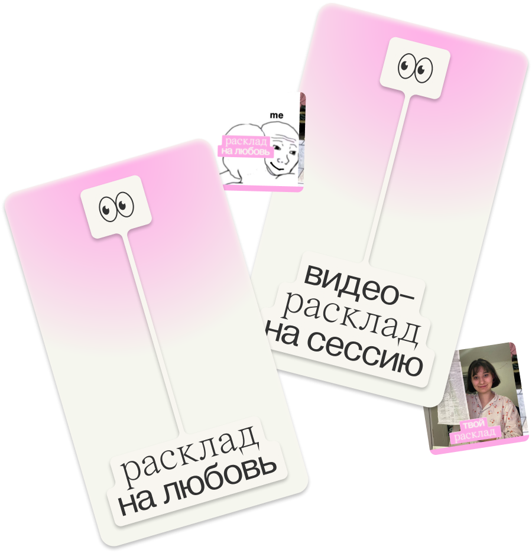
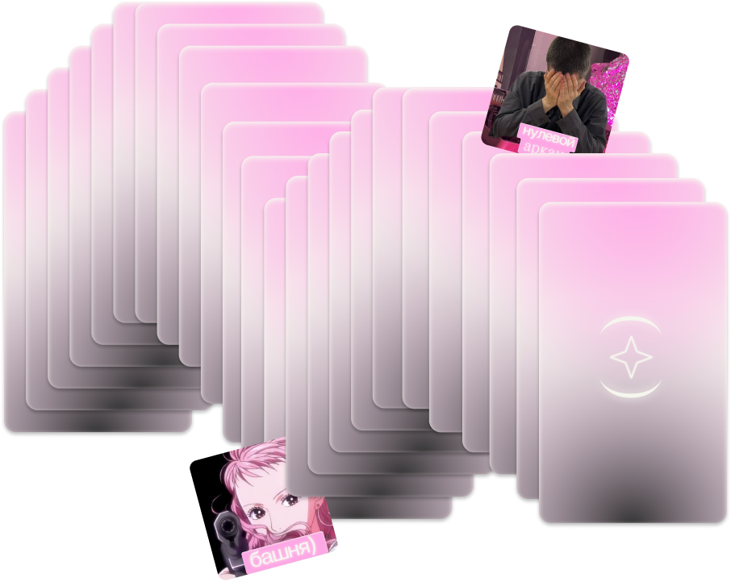

расклад —
это твоя
лучшая
подружка
в мире таро
погадать
медиа о таро для зумерок, сочетающее в себе онлайн-гадания в различных форматах,
актуальные статьи о культуре таро и справочник с трактовками карт
и неважно, кто ты и как сильно погружен в тему
I
расскажем все смешно и некринж для совсем новичков
II
будем личной
таро-подружкой для любитель_ниц гаданий
III
поможем практикующим специалист_кам быть в потоке
никакой
магии
и псевдонаук:
только
ассоциации,
только
игра
готовые
расклады
под любой
запрос
удобный сборник актуальных расшифровок карт доступным языком и в современной символике


гадаешь сама?
подсказки
всегда
под рукой
удобный сборник актуальных расшифровок карт доступным языком и в современной символике
тикток
кринж видео расклады
еще больше
рас)клада
в соцсетях
телеграм-бот
или все-таки рофл гадания онлайн
расклад —
это твоя
лучшая
подружка
в мире таро
погадать
тикток
проект
инстаграм
тг-бот
hse adc
захар день
соня каем
настя малевич
карина рамазанова
маша ванурина